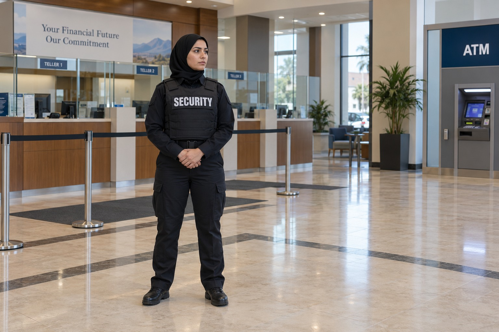

Banks and Financial Institutions

A branch serves customers while maintaining business areas that are not open to every visitor. Security personnel can support the distinction between public customer spaces and restricted areas under the institution’s policies. The officer’s role also includes professional interaction with employees and customers who may need to raise a concern.
Security in a Customer Facing Financial Setting
Paradigm reviews the setting with the authorized branch or institutional representative. A neighborhood branch, a financial office and a property containing several financial businesses do not necessarily need identical coverage. The service is described around the actual assignment and the responsibilities expected of the security officer.
Lobbies, Entrances and ATM Areas
Branch security can include observation of lobby activity and support when a visitor is disruptive or an employee reports a concern. The agreed assignment may also include an ATM vestibule or another area associated with the branch. It should be clear which parts of the property are covered and how the security officer communicates with management.
An ATM located outside a branch presents a different setting from a customer waiting inside the lobby. Paradigm can review both, but coverage should not be assumed merely because the spaces belong to the same institution. The client and security team need a shared understanding of the service boundaries and reporting responsibilities.
Armed Security and Clear Professional Responsibilities
An armed assignment remains a private security role with defined duties. The institution’s own policies, authorized contacts and operational responsibilities remain important. Officers can observe, communicate concerns, document incidents and coordinate with appropriate emergency responders when necessary. The role does not replace branch management or the institution’s established business responsibilities.
Cash transfer inquiries are considered separately from ordinary branch security. A lobby guard assignment should not be represented as automatic custody of cash or a complete transport service. BSIS publishes California security guard registration requirements. Relevant individual credentials and the responsibilities of an armed post are confirmed for the proposed assignment.
Financial Institution Security in Southern California
Paradigm serves clients in Los Angeles County and San Bernardino County. Institutions can review security for a single branch, a financial office or several locations, with each site’s responsibilities clearly identified. The consultation focuses on the people and areas involved and the support expected from the security team.
Contact Paradigm to describe the branch or financial property and the reason you are seeking coverage. We will review the suitability of armed security, the customer facing role and the relationship with your management team. Information involving particular branch arrangements remains private rather than being published as part of the service description.